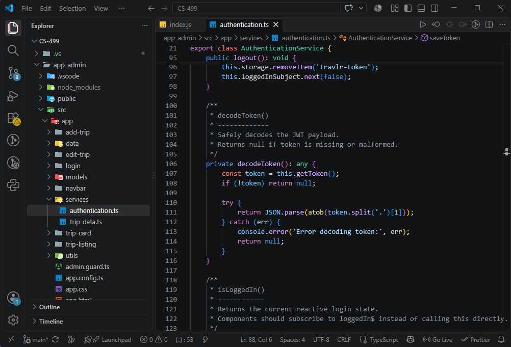
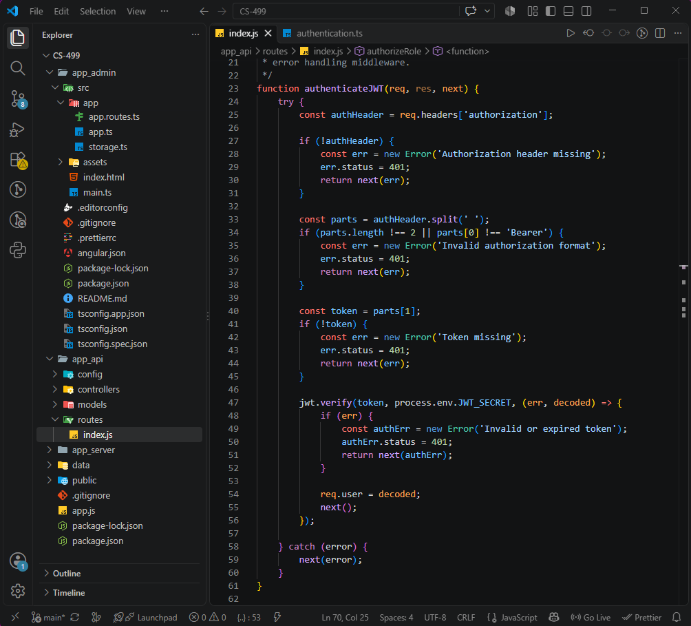

CS‑499: Computer Science Capstone • Southern New Hampshire University
The artifact I selected for the Software Design and Engineering category is the Travlr Getaways admin application, originally created in CS‑465: Full Stack Development I. This part of the project represents the administrative interface used to manage trips, authenticate users, and interact with the Express API and MongoDB database. I chose this artifact because it demonstrates my ability to work with a full‑stack application and improve an existing codebase using modern development practices. It also reflects the type of work I expect to do in IT and cybersecurity roles, where understanding application structure, authentication, and maintainability is essential.
I included this artifact in my ePortfolio because it showcases several important skills: organizing and modernizing a codebase, improving authentication flows, implementing role‑based access control, and refining the overall structure of an Angular application. The enhancement improved the artifact by making the admin interface easier to understand, more secure, and more maintainable. I demonstrated skills in software architecture, component organization, routing, documentation, and secure design principles as I updated the project.
The process of enhancing this artifact taught me a great deal about evaluating existing systems and identifying areas where clarity and structure could be improved. One of the challenges I faced was understanding how the original application handled authentication and routing, since some parts of the code were outdated or inconsistent. I had to carefully trace how users logged in, how tokens were stored, and how access was granted to different parts of the application. This required patience and a willingness to break down the system piece by piece until I fully understood how it worked.

atob() and direct JSON parsing. Understanding this flow was essential before modernizing the authentication structure, improving clarity, and ensuring predictable behavior across the application. This example demonstrates my competency in evaluating existing systems, identifying maintainability issues, and improving authentication workflows.
Another challenge was modernizing the Angular codebase. The original project used older patterns that have since been replaced by standalone components and more streamlined module organization. Updating these areas required research, testing, and verifying that the application still behaved correctly after the changes. These changes made the application more predictable and easier for future developers to maintain.
Through this enhancement, I fully met several course outcomes. I demonstrated my ability to use innovative techniques and tools in computing practices by modernizing the Angular application and improving its architecture. I also demonstrated a security mindset by refining authentication and implementing role‑based access control. I met outcomes related to software engineering and design by improving maintainability, clarity, and structure. I did not fully meet outcomes related to algorithms or data structures in this enhancement, since those were addressed in a separate artifact.
